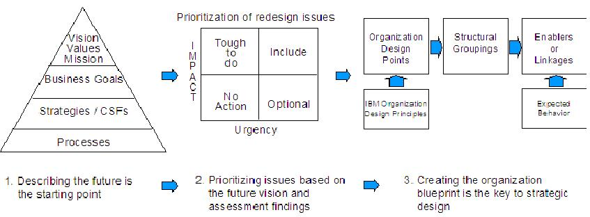

The high level steps to develop future organization requirements are as follows;
1. Review project scope, business goals, and other relevant inputs
2. Identify organization elements which are within scope
3. Develop a set of prioritized design points
4. Perform risk/value analysis
5. Document and agree with client.
Review Project Scope, Business Goals, and other Relevant Inputs
Collect and review the data produced in the current organization description, current organization assessment and
future state vision/definition. If a Change Project Description Form and Role Map (ODR Inc.) have been completed for
this engagement, they should help to clarify the project scope. The statement of work and project plan will also be
helpful. Ensure that the full range and complexity of the project is understood; be mindful of activity planned or
under way in other domains (business process, architecture, etc.). If the client has other concurrent initiatives,
consider the implications they might have for this project.
Identify Organization Elements that are within Scope
Based on the full picture pulled together in step 1, the senior project managers (client and IBM) should work together
to define the scope of the project. This should encompass those organization elements in the nine-cell matrix (produced
for the current organization description or assessment) for which redesign is recommended, such as:
-
Which sites, countries, or regions are to be included
-
What functions and groups will be subject to redesign
-
Specific key individuals who are likely to have new or different roles
-
Management mechanisms and HR programs (e.g., communication, compensation, hiring, education, performance
support) that need adjustment
-
Organizational, team, and individual behaviors targeted for change
If an element is deemed to be out of scope, document the reason. If it is being excluded because the client intends to
carry out the work internally, ensure that any dependency the project has on this activity is clearly understood by the
client. Obtain assurances that there will not be resourcing issues or conflicts in such an arrangement, and if project
management is not involved in this discussion, make them aware of these decisions about out-of-scope
elements.Develop a Set of Prioritized Design Points
Design points are rules, guidelines, principles, and criteria that help orient the redesign. They can be very
client-specific or relatively generic. They can apply to structure (“span of control is 8-12”), behavior (“permits easy
collaboration”), or enablers (“helps build deep expertise in core competencies”). In addition to providing a compass
for the direction of design, they can be used to evaluate alternative options. They are, in effect, the requirements
that the new organization design must meet. They define what is good in a design. Some of the areas that design points
might cover are:
-
Levels of delegation (centralized versus decentralized decisions)
-
Corporate versus business unit ownership of processes and functions
-
Cross-business unit relationships (e.g., synergetic, loosely coupled, independent)
-
Embedded versus separate administrative or staff functions (e.g., HR, finance, IT)
-
Line of business versus geography
-
Process versus function
-
Departmental versus cross-functional teaming
-
Sourcing policies (in versus out)
-
Style of control (e.g., command and control, hierarchical, empowered, networked)
-
Leadership versus management
-
Management system (balanced scorecard versus financial accounting)
IBM has a set of organization design principles that should be used as a starting point (see Organization Change in ICM
AssetWeb, Overview/Other, “FOAD Toolkit Phase 5”). Clients will also have their own ideas, potentially very specific,
of design points. In a workshop, facilitate key client leaders and core team members through the development of design
points. Begin with the vision of the future and the most pressing issues identified in the organization assessment to
define the attributes the organization should have and translate them into design points. The graphic below shows how
design points fit into the organization design process.

The examples listed in this work product include many examples of design points that have been used in client
engagements. Because it can be difficult to meet all design points, it is helpful to prioritize them at this stage.
Another approach is to categorize how they add value (customer, employee, or financial, for example).
Perform Risk/Value Analysis
Four activities make up this step:
-
Identify client risk profile
-
Assess severity of potential redesign impact
-
Assess value added and urgency of potential redesign
-
Develop recommended approach
Identify Client Risk Profile
If they are available, you should review the risk analyses performed for previous decisions or business cases, review
the degree of innovation typical in the client’s industry, and hold interviews with key client decision-makers. Also,
check the current organization description for insights into the client’s culture regarding risk. From this data,
characterize the organization’s approach to risk in the matrix shown in the notation section above. For a multi-entity
project, where different entities may make different decisions about proceeding with redesign, it may be necessary to
identify individual risk profiles for those areas.
Confirm this risk profile in a workshop with appropriate client management.
Assess Severity of Potential Redesign Impact
In workshops or interviews with client staff, arrive at an assessment of each design point using the following scale:
-
An organization redesign that meets this design point would be a minor and cosmetic change and easily absorbed
by the business.
-
An organization redesign that meets this design point would involve significant change and encounter some
resistance by specific groups within the organization.
-
An organization redesign that meets this design point would require far-reaching change and significantly
change the jobs and environment for a large proportion of staff in one or more business areas, and it would
take significant time to realize the benefits.
-
An organization redesign that meets this design point would be a steep difference from the current design,
would require change to culture, would significantly affect almost all staff, and would produce benefits only
very gradually after a period of impaired performance.
If design points have been categorized into the nine-cell matrix, these ratings can be summarized in that format, as
shown in the example below.
9 Cell Matrix
|
Structure
|
Enablers
|
Behaviors
|
Organization/ Enterprise
|
3
|
4
|
4
|
Division SBU Team
|
2
|
3
|
3
|
Individual
|
1
|
2
|
2
|
Assess Value Added and Urgency of Potential Redesign
You should arrive at an assessment of the relative probable value of each design point. Value is defined as net of
costs. Refer to the business case and any strategic evaluations for the project that may have already been carried out.
Document any assumptions made about value estimates and cost estimates. In the absence of client-specific data, use
benchmark data. Use the following scale:
-
There will be no benefit from the redesign if this design point is not met.
-
The operational benefit of meeting this design point significantly exceeds the cost it will require.
-
Both the benefits and operational costs of meeting this design point are marginal.
-
An organization redesign that meets this design point would be nice to have but will not deliver significant
benefits.
This step should clarify the rough cost of redesign implementation (e.g., severance or recruitment, site construction
or moving, client or consultant resources).
Next determine the urgency of meeting each design point. For purposes of this work product, urgency is defined as
timing of the need, and it takes into account whether easy opportunities already exist that could speed up the action.
Again, refer to the business case and any strategic evaluations that may be available. Also, review the current
organization assessment for the list of prioritized issues. Consider recommendations that may be under development in
other domains and determine whether they might depend on a redesign meeting these design points. Urgency may also be
related to other factors such as market or industry positioning; dependency of other initiatives upon it (e.g., an
acquisition, a new business launch); or external changes (e.g., legislative, supplier, technological). Use the
following scale:
-
Something that meets this design point needs to be put into the plan.
-
This design point needs to be met immediately to prevent negative impact so great that current operations will
fail or significant business will be lost.
-
Meeting this design point can be done readily because an opportunity to do so is present.
-
No opportunity exists right now that would make it easy to meet this design point, and it is not urgent to do
so.
This assessment should draw out any dependencies among design points.
Develop Recommended Approach
Summarize the assessment of each design point by using the risk/return table (see notation). Identify any design points
that you would not recommend the client try to meet. For others that are essential but risky, develop recommendations for
actions that could mitigate the risk (e.g., heavier use of pilots, setting pre-conversion standards, phasing, strengthened
feedback mechanisms).At this time also review any proposed changes in other domains and ensure that recommendations are
balanced when viewed from the broadest perspective of the project possible. If risks have been identified that are not
within the redesign scope, they should be addressed via the transition management plan. |